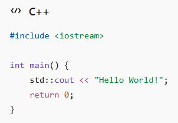
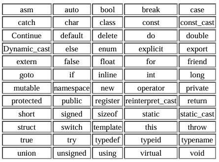
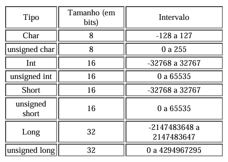
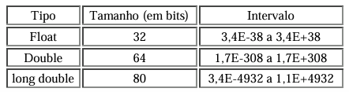
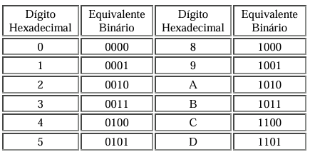

Histório da linguagem C/C++
O C++ foi inicialmente desenvolvido por Bjarne Stroustrup durante a década de 1980 com o objetivo de melhorar a linguagem de programação C, mantendo a compatibilidade com esta linguagem. Stroustrup percebeu que a linguagem Simula possuía características bastante úteis para o desenvolvimento de software, mas era muito lenta para uso prático. Por outro lado o BCPL era rápido, mas possuía baixo nível, dificultando sua utilização em desenvolvimento de aplicações. Durante seu período na Bell Labs, ele enfrentou o problema de analisar o kernel UNIX com respeito à computação distribuída. A partir de sua experiência de doutorado, começou a acrescentar elementos do Simula no C.
C foi escolhido pois possuía uma proposta de uso genérico, era rápido e também portável para diversas plataformas. Algumas outras linguagens que também serviram de inspiração para o informático foram ALGOL 68, Ada, CLU e ML. Novas características foram adicionadas, como funções virtuais, sobrecarga de operadores e funções, referências, constantes, controle de memória pelo usuário, melhorias na checagem de tipo e estilo de comentário de uma linha (//). A primeira versão comercial da linguagem C++ foi lançada em outubro de 1985.
Características da Linguagem C++
O principal desenvolvedor da linguagem C++, Bjarne Stroustrup, descreve no livro “In The
Design and Evolution of C++” quais seus principais objetivos ao desenvolver e expandir esta
linguagem:
1. Em proposta geral, C++ deve ser tão eficiente e portável quanto C, sendo desenvolvida
para ser uma linguagem com tipos de dados estáticos.
2. C++ é desenvolvido para ser o quanto mais compatível com C possível, fornecendo
transições simples para código C.
3. C++ é desenvolvido para suportar múltiplos paradigmas de programação,
principalmente a programação estruturada e a programação orientada a objetos,
possibilitando múltiplas maneiras de resolver um mesmo problema.
4. C++ é desenvolvido para fornecer ao programador múltiplas escolhas, mesmo que seja
possível ao programador escolher a opção errada.
Programação orientada a Objetos
A linguagem C++ é uma das linguagens que suportam vários paradigmas. Inicialmente, sendo uma “evolução” de C, ela suporta inteiramente o paradigma da programação estruturada. Além disso, ela suporta outros paradigmas como a programação procedural, a programação genérica, abstração de dados e a programação orientada a objetos. Dentre estes paradigmas, o mais utilizado atualmente é a Programação Orientada a Objetos, ou mais comumente chamado de OOP (Object-Oriented Programming). Apesar de ter sido criada nos anos 60, este paradigma só começou a ganhar aceitação maior após os anos 90,com a explosão das linguagens C++, Java e Visual Basic. A idéia básica por trás da OOP é criar um conjunto de “objetos” (unidades de software) para modelar um sistema. Estes objetos são independentes entre si, possuindo responsabilidades e funções distintas no programa como um todo, mas que se comunicam entre si através do envio e recebimento de mensagens. A OOP é especialmente útil para grandes programas que se beneficiam mais com a modularidade oferecida por este paradigma: dividindo o programa em vários módulos independentes, aumenta-se a flexibilidade e a facilidade para manutenção do programa como um todo.
O C++ permite organizar o código utilizando conceitos como:
Classes
Objetos
Herança
Polimorfismo
Encapsulamento
Esses recursos ajudam a criar programas mais organizados, reutilizáveis e fáceis de manter.
Controle de Memória
O programador pode controlar diretamente o uso da memória do computador, tornando o C++ uma excelente escolha para aplicações que exigem desempenho máximo.
Exemplos de Aplicações Escritas em C++
Abaixo temos alguns exemplos de aplicações e programas comerciais desenvolvidos totalmente ou parcialmente em C++.
1. Grande parte dos programas da Microsoft, incluindo Windows XP, Windows NT,
Windows 9x, Pacote Office, Internet Explorer, Visual Studio e outros.
2. Sistemas Operacionais como o já citado Windows, Apple OS X, BeOS, Solaris e
Symbian (sistema operacional para celulares).
3. Bancos de dados como SQL e MySQL.
4. Aplicações Web, como a máquina de busca Google e o sistema de comércio virtual da
Amazon.
5. Aplicações gráficas como os programas da Adobe (Photoshop, Illustrator), Maya e
AutoCAD.
6. Jogos em geral, como o Doom III.
A lista é enorme e poderia se estender por muitas e muitas páginas. Atualmente C++ é, juntamente com Java, a linguagem de programação comercial mais difundida no mundo.
Compiladores
O que é um compilador?
Toda linguagem de programação possui um tradutor de código. Este tradutor pode ser um compilador ou um interpretador, dependendo da linguagem. Interpretadores são programas que leêm o código-fonte e executam ele diretamente, sem a criação de um arquivo executável. Chamamos de compilador o programa que traduz um arquivo escrito em código de linguagem de programação (arquivo-fonte) para a linguagem do microprocessador, criando um arquivo capaz de executar as instruções pedidas (arquivo executável). O primeiro passo de um compilador é analisar o código presente no arquivo-fonte, verificando se existem erros de sintaxe. Caso algum erro de sintaxe seja encontrado, a compilação é interrompida para que o programador possa corrijir estes erros. Caso o código não possua erros o próximo passo do compilador é criar um arquivo de código-objeto, que possui as instruções do programa já traduzidas para a linguagem da máquina e informações sobre alocação de memória, símbolos do programa (variáveis e funções) e informações de debug. A partir deste arquivo de código-objeto, o compilador finalmente cria um arquivo executável com o programa compilado, que funciona independente do compilador e realiza as instruções criadas pelo programador.
Compiladores de C++
Existem muitos compiladores de C++ no mercado. Os mais famosos são os softwares da Borland e da Microsoft, que são realmente muito bons e oferecem muitos recursos. O problema é que estes compiladores são caros e voltados principalmente para programadores experientes, que podem fazer uso dos recursos avançados destes programas. Para quem não está ainda aprendendo a linguagem e não quer ainda gastar dinheiro com compiladores, existem várias opções de compiladores freeware (software livre, “de graça”). Nesta seção descreveremos a instalação e o uso do DevC++, um compilador freeware muito utilizado.
DevC++
O Dev-C++ é um compilador freeware das linguagens C, C++ e C#. É uma opção muito interessante, pois é de fácil utilização e aprendizado para usuários novos e possui muitos recursos avançados para usuários experientes. Além de, claro, seu download ser gratuito.
Instalação
Download DevC++Estrutura básica de um Programa em C++
Vamos ao exemplo do famoso "Hello World"

Explicação:
#include < iostream >: importa recursos de entrada e saída.
int main(): função principal do programa.
std::cout: exibe informações na tela.
return 0: indica que o programa terminou corretamente.
Características e Definições Gerais da Linguagem C++
Nomes e Identificadores Usados na Linguagem C++
Existem algumas regras para a escolha dos nomes (ou identificadores) de variáveis em C++:
Nomes de variáveis só podem conter letras do alfabeto, números e o caracter
underscore “_”.
Não podem começar com um número.
Nomes que comecem com um ou dois caracteres underscore (“_” e “__”) são
reservados para a implementação interna do programa e seu uso é extremamente
desaconselhado. O compilador não acusa erro quando criamos variáveis desse jeito,
mas o programa criado se comportará de forma inesperada.
Não é possível utilizar palavras reservadas da linguagem C++ (para mais detalhes,
veja o item 2.2). Também não é possível criar uma variável que tenha o mesmo nome
de um função, mesmo que essa função tenha sido criada pelo programador ou seja
uma função de biblioteca.
C++ diferencia letras maiúsculas e minúsculas em nomes de variáveis. Ou seja, count,
Count e COUNT são três nomes de variáveis distintos.
C++ não estabelece limites para o número de caracteres em um nome de variável, e
todos os caracteres são significantes.
Palavras Reservadas na Linguagem C++
Na linguagem C++ existem palavras que são de uso reservado, ou seja, que possuem funções específicas na linguagem de programação e não podem ser utilizadas para outro fim, como por exemplo, ser usada como nome de variável. Por exemplo, a palavra reservada “for” serve para chamar um laço de repetição, e não pode ser utilizada como nome de uma variável.
A lista abaixo relaciona as palavras reservadas da linguagem C++:

É importante notar que a linguagem C++ diferencia letras maiúsculas e minúsculas, ou seja, char é uma palavra reservada de C++ mas CHAR ou ChAr não é (entretanto, normalmente desaconselha-se o uso dessa diferenciação por atrapalhar a legibilidade do código). Reforçando o que já foi mencionado, as palavras reservadas só irão executar os comandos que lhes foram designados.
Tipos e Dados
Quando um programa é escrito em qualquer linguagem de programação é necessário a
definição de algumas variáveis. Variáveis são instâncias em que serão armazenados valores
utilizados durante a execução de programas. Estas variáveis podem ser modificadas para
suportar diferentes tipos de dados. Os principais tipos de dados utilizados em C++ podem ser
divididos em variáveis inteiras e reais.
Variáveis inteiras servem para armazenar números inteiros, sem partes fracionárias. O principal
tipo de variável inteira em C++ é o int. Além dele, existem os tipos char, short e long, cada um
deles caracterizado por um tamanho em bits diferente. Estes tipos podem ser modificados pelo
prefixo “unsigned”, que determina que a variável em questão só terá valores positivos,
liberando o bit de sinal e aumentando a capacidade de armazenamento da variável (por
default, todas as variáveis inteiras e reais declaradas em C++ são “signed”, ou seja, possuem
um bit de sinal e podem ser tanto positivas como negativas). A tabela abaixo mostra os
principais tipos de inteiros, seus tamanhos em bits e seu intervalo de armazenamento.

Variáveis reais servem para armazenar números que possuem partes fracionárias. Existem duas maneiras de representar números fracionários em C++. A primeira, a mais simples, é utilizar o ponto para separar as partes inteiras e fracionárias. Por exemplo:
0.00098
1.2145
3.1461
8.0
(Mesmo no caso de um número com parte fracionária igual a zero, a utilização do ponto assegura que este número seja considerado um número de ponto flutuante por C++).
A segunda maneira é utilizar a notação científica E. Por exemplo : 3.45E7 significa “3.45 multiplicado por 10 elevado à sétima potência (10.000.000)”. Essa notação é bastante útil para representar números realmente grandes ou realmente pequenos. A notação E assegura que o número seja armazenado em formato de ponto flutuante. Alguns exemplos:
2.52E8 = 2.52 X 100.000.000 = 252.000.000
-3.2E3 = -3.2 X 1000 = -3200
23E-4 = 23 X 0.0001 = 0.0023
Assim como os inteiros, os números reais em C++ podem ser representados por 3 tipos de variáveis com diferentes intervalos. São elas: float, double e long double. Float é o tipo de variável real natural, aquela com a qual o sistema trabalha com maior naturalidade. Double e long double são úteis quando queremos trabalhar com intervalos de números reais realmente grandes. Utilizamos números reais geralmente para expressar precisão através do número de casas decimais, então podemos dizer que uma variável float é menos precisa que uma variável double, assim como uma variável double é menos precisa que long double. A tabela abaixo mostra os tipos de variáveis reais, seu tamanho em bits e o intervalo de armazenagem.

Definição de Variáveis
As variáveis devem ser declaradas, ou seja, devem ser definidos nome, tipo e algumas vezes seu valor inicial. As variáveis são classificadas em variáveis locais e globais. Variáveis globais são aquelas declaradas fora do escopo das funções. Variáveis locais são aquelas declaradas no início de um bloco e seus escopos estão restritos aos blocos em que foram declaradas. A declaração de variáveis locais deve obrigatoriamente ser a primeira parte de um bloco, ou seja, deve vir logo após um caractere de “abre chaves”, '{'; e não deve ser intercalada com instruções ou comandos.
Para declarar uma variável somente é obrigatório declarar seu tipo e nome:
< tipo > < nome >;
Por exemplo:
int exemplo;
Além disso, caso seja necessário, podemos declarar um valor a esta variável no momento de sua declaração, e também adicionar um prefixo a ela, da seguinte forma:
< prefixo > < tipo > < nome > = < valor >;
Por exemplo:
unsigned int exemplo = 12;
Definição de Constantes
O conceito de constantes em linguagens de programação é atribuir um certo valor constante a
um nome, e quando este nome for referenciado dentro do código do programa, será utilizado
nas operações o valor atribuído a este nome. Ou seja, se for definida a constante PI com o
valor “3,1415926536”, quando for encontrado no código o nome PI, será utilizado em seu lugar
o valor “3,1415926536”.
Em C++ , utilizamos o prefixo const associado a um tipo, um nome e um valor para definir uma
constante. Assim:
const
Por exemplo:
const int eterna = 256;
No exemplo acima, definimos uma constante inteira de nome “eterna” que possui o valor numérico 256. É importante notar que devemos declarar a constante e lhe atribuir um valor na mesma linha de comando. Não podemos criar uma constante e lhe atribuir um valor posteriormente, ou seja, as seguintes linhas de comando são inválidas:
const int eterna; eterna = 256;
A partir da primeira linha, “eterna” passa a ser uma constante e seu valor não pode ser mais mudado durante a execução do programa. Como seu valor não foi declarado, esta constante pode ter qualquer valor que esteja na memória do computador naquele momento da declaração da variável.
Números Hexadecimais e Octais
Em programação algumas vezes é comum usar um sistema de numeração baseado em 8 ou 16 em vez de 10. O sistema numérico baseado em 8 é chamado octal e usa os dígitos de 0 a 7. Em octal, o número 10 é o mesmo que 8 em decimal. O sistema numérico de base 16 é chamado hexadecimal e usa os dígitos de 0 a 9 mais as letras de A até F, que equivalem a 10, 11, 12, 13, 14 e 15. Por exemplo, o número hexadecimal 10 é 16 em decimal. Por causa da freqüência com que estes dois sistemas numéricos são usados, a linguagem C++ permite que se especifique valores inteiros em hexadecimal ou octal para uma variável ou constante em vez de decimal. Um valor hexadecimal deve começar com “0x” (um zero seguido de um x), seguido pelo valor em formato hexadecimal. Um valor octal começa com um zero. Aqui estão alguns exemplos:
hex = 0xFF; /* 255 em decimal */ oct = 011; /* 9 em decimal */
Outra base numérica muito utilizada na programação é a base binária. Apesar de C++ não possuir uma forma específica de se expressar valores de base binária, podemos utilizar a notação hexadecimal para esta função. A tabela abaixo mostra como pode ser feita a conversão de um valor binário para um valor hexadecimal.

Valores Strings
Outro tipo de valor suportado pela Linguagem C++ é o tipo string. Uma string é um conjunto de caracteres entre aspas. Por exemplo, “você é um vencedor” é uma string, composta pelas várias letras que formam a frase. Não confunda strings com caractere. Uma constante caractere simples fica entre dois apóstrofos, por exemplo „a‟. Entretanto “a” é uma string que contém somente uma letra.
Conclusão
Este resumo apresentou os principais conceitos da linguagem C++, abordando sua estrutura básica, tipos de dados, variáveis, características, etc. Esses tópicos são essenciais para quem está começando a aprender a linguagem e deseja construir uma base sólida em programação.
No entanto, o C++ é uma linguagem extremamente ampla e poderosa, possuindo muitos outros recursos que não foram abordados aqui, como ponteiros, referências, gerenciamento dinâmico de memória, templates, manipulação de arquivos, bibliotecas padrão (STL), tratamento de exceções, programação genérica, programação concorrente e diversas técnicas avançadas utilizadas no desenvolvimento profissional.
Por esse motivo, este conteúdo deve ser visto como uma introdução aos conceitos fundamentais da linguagem. Para aprofundar seus conhecimentos e explorar todo o potencial do C++, recomenda-se consultar, livros, cursos e materiais complementares. Ao final desta página, você encontrará alguns links úteis para continuar seus estudos e expandir seu aprendizado de forma mais completa.
Para se aprofundar mais
Programação Básica em C++Documentação do C++
Youtube | Aprenda C++